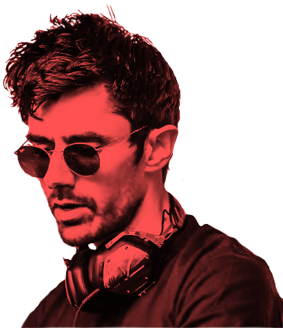
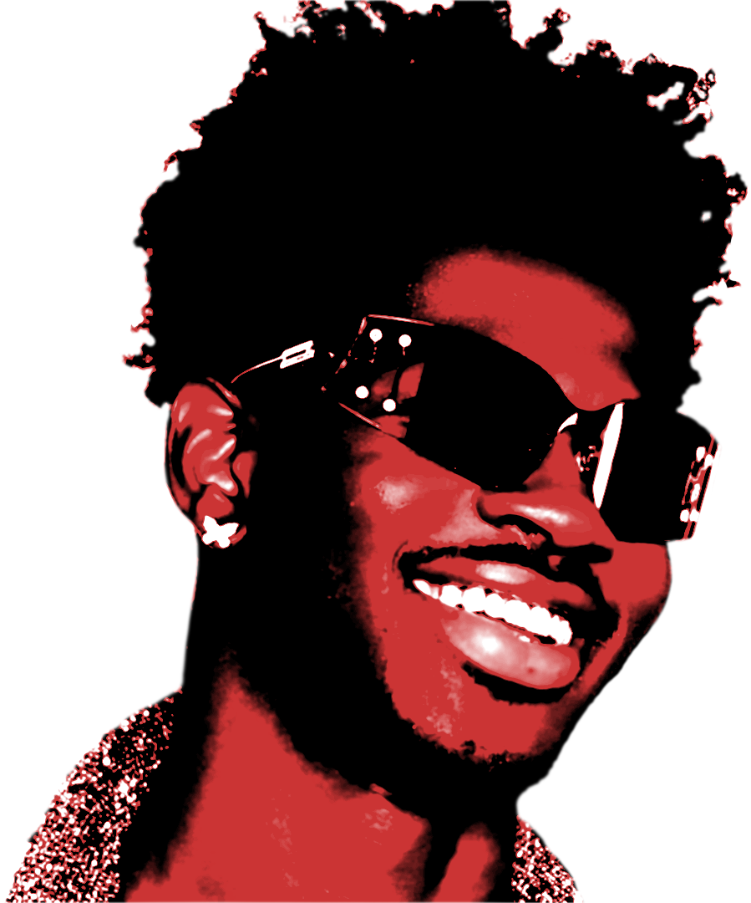

.png)
The Weeknd, is a prominent figure in contemporary popular music, he is noted for his unconventional music production, artistic reinventions, and his signature use of the falsetto register. Born and raised in Toronto, Tesfaye he began his career in 2009 by anonymously releasing music on YouTube. Two years later, he co-founded the XO record label and released the mixtapes House of Balloons, Thursday and Echoes of Silence, which gained recognition for his style of contemporary and alternative R&B and the mystique surrounding his identity.
Kshmr is an American musician, songwriter, DJ, record producer, former rapper, and singer. He was ranked 23rd on DJ Mag's 2015 Top 100 DJs poll and was awarded highest new entry for the year. In the same poll he elevated to 12th in 2016 and 2017, and again in 2020. He was ranked 11th in the same poll in 2021; and in 2022 in same poll he ranked 12. In July 2017, he launched Dharma Worldwide, a sublabel of Spinnin' Records. Kshmr performed live at many music festivals like Coachella, Tomorrowland, EDC, Ultra and Sunburn.
Lil Nas X is an American rapper, singer, and songwriter. He rose to prominence with the release of his country rap single "Old Town Road", which first achieved viral popularity in early 2019 before climbing music charts internationally and becoming diamond certified by November of that same year, moving over ten million certified units in streaming and sales combined.
Monstercat is a Canadian independent electronic music record label based in Vancouver, British Columbia. Founded in 2011 by Mike Darlington and Ari Paunonen, the label releases regular compilation albums featuring music from various artists, beginning with the release of its first compilation album, Monstercat 001 - Launch Week. Until the release of Monstercat 030 - Finale in 2017, each compilation was given a name and depicted the story of the aforementioned mascot in the album cover. This preceded a rebranding of the label, with a new series of albums titled Monstercat Uncaged. In 2018, Monstercat introduced a new brand titled "Instinct". In 2021, Monstercat acquired electronic label Silk Music to form a third brand titled "Monstercat Silk". The compilations ended the same year with the release of Monstercat Uncaged Vol. 11. Monstercat has featured many notable artists, including Pegboard Nerds, Vicetone, and Seven Lions. Monstercat has also released soundtrack albums for various video games, including Fortnite, Rocket League and Beat Saber. The label is best known for the 2016 release of the song "Alone" by American DJ Marshmello, which reached Platinum status in the United States and Canada in 2017 and 2018, respectively. The April Fool's Day release of "Crab Rave" by Irish music producer Noisestorm became an internet meme for months after its release.
NoCopyrightSounds is a British record label that releases royalty-free electronic dance music. Starting as a YouTube channel, it reached 1 million paid downloads in 2017. NoCopyrightSounds was started as a YouTube channel in 2011 by an "avid gamer" named Billy Woodford. The label was described by Forbes as "a YouTube-first label that allows indie creators to use and even monetize its music freely as long as they give due credit back to the content owners". In 2017, NoCopyrightSounds achieved a milestone of over a million sales of digital downloads, despite releasing music for free. The label manager Daniel J. Lee said "Similar to services with a freemium model, NCS provides both the option to enjoy music for free but at the same time also enables fans to support the music across paid services", asserting that the label releases music for free and also sells them. Woodford, about the milestone, stated, "I'm immensely proud to have reached 1 million paid downloads, and believe this shows the growth and strength NCS has built over the years." He also commented that "The demand for fresh original music from Creators is enormous and growing daily."
Spinnin' Records is a Dutch electronic music record label founded in 1999 by Eelko van Kooten and Roger de Graaf. In September 2017, Warner Music Group acquired Spinnin' Records for over $100 million. Van Kooten is the son of former Dutch radio DJ and businessman Willem van Kooten, and initially worked in the publishing business of his father. Together with Roger de Graaf, a former employee of the specialist dance retailer Rhythm Import, van Kooten formed Spinnin' Records in 1999. In the beginning, they concentrated on the pressing of vinyl for artists. Spinnin' Records hosts 25 active sub-labels alongside their main imprint; the majority linked to a specific artist. The label provides A&R, management, publishing and (digital) marketing for artists they have under contract. The label used to promote songs without naming the artists in order to 'create a buzz'. Following the acquisition of Spinnin' by Warner Music Group, co-founder van Kooten left the company while de Graaf became the CEO.